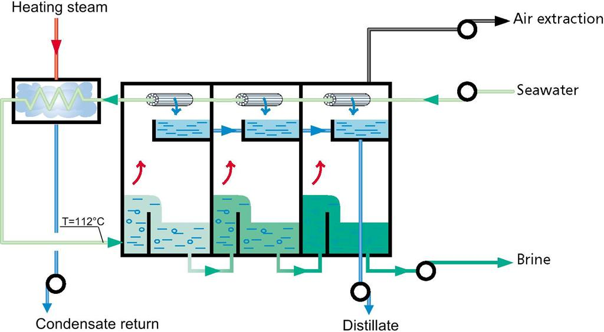

Multi-Stage Evaporators
- So far, we have discussed single-effect (single-stage) evaporators.
- One of the problems of single-effect evaporators is that they are energy intensive and require a lot of utilities.
- Large quantities of steam are required to heat the evaporator, and large amounts of cooling water are needed to condense the output.
- In process design, we utilise heat integration to maximise the efficiency of the process.
- Heat integration can be used within a multi-effect (multi-stage) evaporator…


An example of heat integration, where energy recovered from
the condensers is used to preheat the feed stream in a
seawater desalination plant. The evaporation in each stage is
driven by pressure drops between the stages (note, this is not
a particularly efficient design!).
- This form of heat integration is only available when the inlet stream is far from its boiling point, as the heat of condensation is large when compared to the sensible heat.
- The pressure drops between stages must also be large to cause significant boiling without additional heat input.
- Both of these conditions are not often the case and they place a constraint on the number of effects possible.
- Let's consider the opposite system (inlet stream close to its boiling point, heating in each stage).
- There are two other forms of heat-integration in multi-effect evaporators we can use…

- In forward-feed multi-effect evaporators, the vapour from the first stage is used to heat the liquid in the second stage.
- Pressure drops are used between stages to change the boiling point, and so generate a $\Delta T$ between the vapour and liquid output from each stage.
- The vapour and liquid streams from each stage flow co-currently.
- This configuration is used when the feed stream is already hot (e.g., from a reactor), or if high temperatures must be avoided.

- In backward-feed multi-effect evaporators, the liquid stream flows counter-current to the vapour streams.
- Again, there is a pressure gradient between stages to facilitate heat transfer, and so pumps are required between stages.
- The advantages are that not all of the feed fluid needs to be heated to the high boiling temperatures of the high-pressure stage.
- If the product is viscous, the concentrated (high-viscosity) liquid is present at the highest temperature, thus reducing the viscosity.

- When choosing the number of stages, a trade-off between the capital cost and running cost determines the number of stages.
- But, if we assume all streams are water/steam and a constant latent heat of vaporisation, for each kilogram of steam, three kilograms of feed are evaporated in the above diagram (steam economy${}\approx3$).
- This greatly increases the economy of the evaporators. For example, in sugar-beet factories, eight effect evaporators are not uncommon (steam economy${}\approx8$!).
- Distillation columns are multi-stage evaporators, driven by the condensation of a counter-current vapour phase, so this idea will come in useful later.
- The only difference is that for distillation we need to use vapour-liquid equilibrium data to predict the split of components in the vapour/liquid stream of each stage.
- Back to multi-stage evaporator design (for now) to better understand the heat and mass balance.


- When evaporators are designed, you are usually given/determine: available steam pressure, final stage, feed stream specification, final target liquid concentration, overall heat transfer coefficient estimates, and physical properties.
- Our system is designed once we know the areas $A_1$, $A_2\ldots$. But we need temperatures and heat fluxes ($A_i=Q_i\,U_i^{-1}\,\Delta T_i^{-1}$) and this depends on the heat balance, which depends on the mass balance, which depends on the heat balance,…
- This is a implicit set of equations, which is very common. Computers and humans alike solve these the same way. Guess some values, work through all equations to calculate these values again and compare.
- You can think of this problem as a cycle: solve the mass balance then solve the energy balance. At first, we guess the heat balance results that are needed in the mass balance, then use the solved mass balance to carry out the heat balance and compare.
- “Shooting” methods like this start at one point in the cycle (i.e. the feed stream mass balance) and "shoot" to try to meet the end of the cycle (the solved energy balance/evaporator areas).
- The better our initial guesses of the heat balance, the closer our shot will land to the target (and the less shots we need to take). If we miss, we have to try again.
- So what can we do to get good guesstimations of results from the heat balance? Use physically realistic approximations!
- Let us assume that for this initial estimate, we can neglect the heat of solution, boiling point rise and other concentration effects.
- We also neglect sensible heat (to heat the feed stream to boiling point, or carried in the liquid phase between stages).
- These assumptions imply that the heat transferred from the condensing steam in the first evaporator, is recovered in the latent heat of the vapour stream. \begin{align*} Q_1\approx Q_2\approx Q_3\approx Q_{effect} \end{align*}
- If we assume the latent heats of vapourisation are constant ($h_{fg,steam}\approx h_{fg,1}\approx h_{fg,2}$), we can use another approximation that the flow rates of the vapour phases are equal. \begin{align*} V_1\approx V_2\approx V_3 \end{align*}
- Above are all useful approximate expressions as we can immediately gain an initial estimate of the flows (and therefore concentrations) in each evaporator. We can also generate useful approximate energy balance expressions from these equations…
- If we assume the duty and area of each effect/stage is equal (actually a deliberate design choice, as building several exactly the same sized evaporators is economical), using the heat transfer equation we have \begin{align*} \frac{Q_{effect}}{A_{effect}}\approx U_1 \Delta T_1\approx U_2 \Delta T_2 \approx U_3 \Delta T_3 \end{align*}
- Thus, the temperature difference in each stage is inversely proportional to the heat transfer coefficient (this differs between stages as the fluid has high changes in concentration/viscosity/etc.).
- We can rearrange the above expression \begin{align*} \Delta T_i &\approx \frac{Q_{effect}}{A_{effect}} \frac{1}{U_i} & \frac{\sum_i\Delta T_i}{\sum_i1/U_i} &\approx \frac{Q_{effect}}{A_{effect}} \end{align*} (we summed the LHS equation over all stages to give the RHS equation)
- Any temperature is obtained by substituting for $Q_{effect}/A_{effect}\approx U_j T_j$, \begin{align*} \Delta T_1 \approx \frac{1}{U_1}\frac{\sum_i\Delta T_i}{\sum_i1/U_i} \end{align*}
- These expressions are useful as estimates for $U$ are available (from experience), and the overal temperature difference is defined from the steam and outlet temperatures $\sum_i\Delta{}T_i=T_{3}-T_{steam}$.

- To reiterate, in commercially available multi-effect evaporators the heat transfer areas of each stage are usually identical as they like to stamp-out the same design. \begin{align*} A_1=A_2=A_3=A_{effect} \end{align*} ( This expression is not approximate, it is a design constraint)
- This is the final constraint on the iterative calculations. Once you converge to a single size for all evaporators, you may stop iterating.
- The previous expressions are useful in the initial estimation step, before attempting to converge on a solution for the evaporator sizing.
- We can make some additional educational assumptions to demonstrate the relationship between single and multi-stage evaporators…
- If we assume the heat transfer coefficients are, on average, the same \begin{align*} U_1\approx U_2\approx U_3\approx U_{effect} \end{align*} Then the total heat transferred is \begin{align*} Q_{total} &= Q_1+Q_2+Q_3\approx U_{effect} A_{effect}\sum_i \Delta T_i\\ Q_{total} &\approx U_{effect} A_{effect}\left(T_3-T_{steam}\right) \end{align*}
- Thus, we can see that the multi-stage evaporator is equivalent to a single stage evaporator with the same area, overall temperature difference and average heat transfer coefficient. However, the steam economy is significantly higher (we get much more vapour, $V_{total} \neq Q_{total} / h_{fg}$).
- We add to these approximate equations the exact mass balance equations, around the whole multi-stage evaporator and around each individual stage. \begin{align*} F &= V_1+V_2+V_3+L_3 & x_F F &= x_3 L_3\\ L_i&= V_{i+1} + L_{i+1} & x_i L_i&= x_{i+1} L_{i+1} \end{align*}
- We also have the corresponding energy balance equations.
- In summary, assuming we have three stages/effects…
- Approximate equations \begin{align*} Q_1&\approx Q_2\approx Q_3 & V_1&\approx V_2\approx V_3\\ \Delta T_1 &\approx \frac{1}{U_1}\frac{\sum_i\Delta T_i}{\sum_i1/U_i} \end{align*}
- Exact equations \begin{align*} F &= V_1+V_2+V_3+L_3 & x_F F &= x_3 L_3\\ L_i&= V_{i+1} + L_{i+1} & x_i L_i&= x_{i+1} L_{i+1}\\ A_1&=A_2=A_3 & Q_i &= U_i A_i\Delta T_i\\ \sum_i\Delta{}T_i&=T_{3}-T_{steam} \end{align*} and the corresponding energy balance equations.
- These are a lot of equations to solve, but in the next lecture we'll look at applying these equations and the general design procedure.